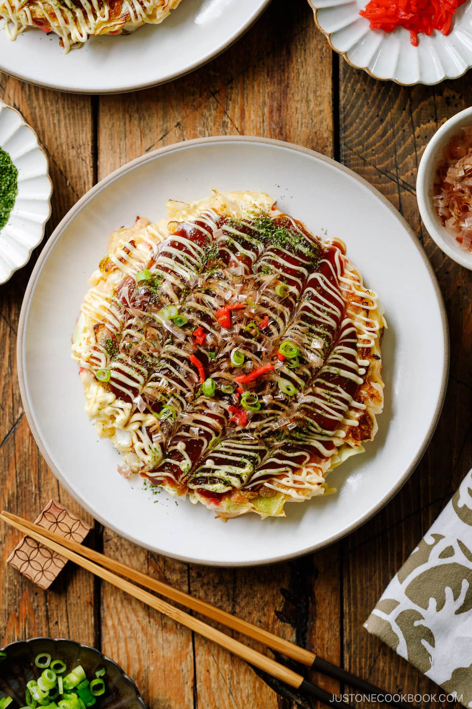

Okonomiyaki Recipe

Description
Okonomiyaki is a delicious Japanese savory pancake “grilled as you like it“ with your choice of protein and tasty condiments and toppings. This recipe for this popular Osaka street food includes the 6 key ingredients that give it a truly authentic taste.
Ingredients
For the Batter
- 1 cup all-purpose flour
- ¼ tsp kosher salt
- ¼ tsp sugar
- ¼ tsp baking powder
- 2-3 inches nagaimo
- ¾ dashi
For the Okonomiyaki
- ½ large cabbage head
- ¼ cup pickled red ginger (beni shoga)
- ½ lb sliced pork belly or bacon
- 4 large eggs
- ½ cup panko
- cooking oil
For Serving
- okonomiyaki sauce (or make your own)
- Kewpie mayonnaise
- dried bonito flakes
- salted seaweed (aonori)
- pickled red ginger (benishoga)
DIY Okonomiyaki Sauce
- 3 tbsp sugar
- ¼ oyster sauce
- ½ cup ketchup
- 7 tbsp Worcestershire sauce
Steps
Prepare the Batter
- In a large bowl, combine flour, kosher salt, sugar, and baking powder. Mix all together.
- Peel and grate nagaimo in a small bowl. Note: The nagaimo may irritate your skin and cause itchiness. Work quickly and rinse your hands immediately after touching the nagaimo. It is very slimy and slippery, so make sure you have a good grip on the nagaimo if you wear kitchen gloves.
- Add the grated nagaimo and dashi to the bowl.
- Mix it all together until combined and set aside while you prepare the ingredients. If time allows, cover the bowl with plastic wrap, put it in the refrigerator, and let the batter rest for at least one hour (and up to overnight). Resting the batter relaxes the gluten, improves the flavor, and makes the okonomiyaki fluffier.
Prepare the Ingredients
- Discard the core of the cabbage head and cut into ½-inch (1.3-cm) slices.
- Then, mince the cabbage strips. Wash the cabbage and drain well to remove excess moisture that could potentially dilute the batter.
- Chop pickled red ginger. Cut pork belly or bacon into 4-inch pieces and set aside.
Prepare the Okonomiyaki Batter
- If you rested the base batter for an hour or longer, take it out from the refrigerator. Add large eggs, panko, and two-thirds of the pickled red ginger to the bowl. Mix until combined.
- Add the minced cabbage to the batter, one-third of it at a time. Mix well before each addition.
- Check the consistency of the okonomiyaki batter. Make sure the cabbage is coated well in the batter. You do not need to use all the minced cabbage if it is overpowering the batter.
Cook the Okonomiyaki
- Prepare a large griddle or two large frying pans with lids to cook two savory pancakes at a time. In the pans, heat a bit of oil on medium heat. Then add one portion of the batter to each pan.
- Using a spatula, spread and shape the batter in a circle about 6 inches in diameter. We like thicker okonomiyaki (the final thickness is ¾ inches). If you’re new to making okonomiyaki, make it smaller and thinner so it’s easier to flip.
- Place 3 slices of pork belly or bacon on top of the okonomiyaki and cook, covered, on medium-low heat for 5 minutes.
- When the bottom side is nicely browned, flip them over.
- Gently press the okonomiyaki to fix their shape and keep them together. Cook, covered, for another 5 minutes.
- Flip them over one last time and fix their shape. Then cook, uncovered, for 2 minutes.
- Transfer the cooked okonomiyaki to individual plates. Continue cooking the rest of the okonomiyaki.
Serve
- Spread okonomiyaki sauce on top with a brush or spoon.
- Then, drizzle Kewpie mayonnaise in a zigzag pattern. Drag a chopstick tip through the mayo every ½ inch to create the iconic look.
- Sprinkle the top with bonito flakes, aonori (seaweed), and chopped green onions/scallions. Finally, garnish with the remaining pickled red ginger.
Store
- Wrap each okonomiyaki (without the sauce or toppings) in aluminum foil and put it in a freezer bag. Store in the refrigerator for up to 3 days and in the freezer for a month.
- To reheat, put in an oven at 350°F for 10–15 minutes (or twice as long if frozen).